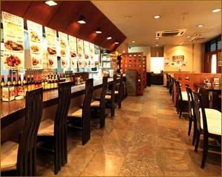

海老専家を中心に、本格的な中国料理を提供。
長年培ってきた経験を活かし、本格的な中国料理を提供しています。海老専家は、福進発展のレストラン事業を代表する店舗として、店舗情報や料理の魅力を分かりやすく伝えています。
レストラン事業
1995年の創業以来、中華レストラン「海老専家」を中心に店舗運営を行っています。
長年培ってきた経験を活かし、本格的な中国料理を提供しています。海老専家は、福進発展のレストラン事業を代表する店舗として、店舗情報や料理の魅力を分かりやすく伝えています。

飯田橋・神楽坂エリアで展開する、海老料理を中心とした中国料理店です。ロブスター、天然タイガー、バナメイ海老、ソフトシェルシュリンプなど、さまざまな海老の魅力を活かした料理を提供しています。ランチ、ディナー、宴会、テイクアウトまで幅広い利用シーンに対応しています。
小伝馬町・岩本町エリアにある海老専家系列の中国料理店です。平日はランチとディナー、土曜日はランチ営業を行い、日常の食事から仕事帰りの食事、会食まで利用しやすい店舗です。海老専家の流れを受け継ぎながら、地域に根ざした中国料理を提供しています。
Bento Production Base
福記美食は、セントラルキッチンでの弁当製造・販売を中心とした事業拠点です。
中華レストランの運営で培った調理経験を活かし、昼食向けの弁当販売や法人向け卸販売を展開しています。
多いときには1,500食以上の弁当を製造するなど、まとまった数量の製造にも取り組んでいます。
※現在、店内でのお食事の提供は行っていません（お弁当の店頭販売は行っています）。
弁当事業の詳細を見る店舗情報、取材、事業に関するお問い合わせはこちらからご連絡ください。